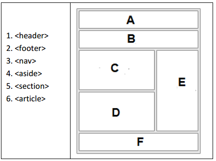

-
(FGV – IBGE/2016) Um desenvolvedor Web mobile pretende utilizar os novos elementos semânticos disponíveis no HTML5 em suas páginas. Associe corretamente os elementos HTML5 enumerados com o posicionamento na ilustração que representa conceitualmente as partes de uma página HTML:
A=1, B=6, C=4, D=3, E=5 e F=2.
A=2, B=3, C=6, D=4, E=5 e F=3;
A=1, B=4, C=6, D=5, E=3 e F=2;
A=1, B=3, C=5, D=6, E=4 e F=2;
-
No HTML, trabalhamos com listas ordenadas tag ol e listas não ordenadas tag ul, cada uma delas tem um uso específico. Nas listas ordenadas, a ordem dos itens não pode ser alterada, como em uma receita, por exemplo. Já nas listas não ordenadas, a ordem é flexível, e não altera o resultado final. Qual a maneira correta de montar a seguinte lista não ordenada no nosso HTML?
- Item lilás
- Item azul
- Item vermelho
-
<ol>
<li>Item lilás</ol>
<li>Item azul</ol>
<li>Item vermelho</ol>
</ol>
-
<ul>
<li>Item lilás
Item azul
Item vermelho</li></ul>
-
<ul>Item lilás</ul>
<ul>Item azul</ul>
<ul>Item vermelho</ul>
-
<ul>
<li>Item lilás</ol>
<li>Item azul</ol>
<li>Item vermelho</ol>
</ul>
-
-
Blocos de código dentro de vários <body>
-
Blocos de código dentro de vários <head>
-
Blocos de código dentro de vários <p>
-
Blocos de código dentro de vários <div>
Como criar vários blocos de conteúdo no HTML?
-
-
-
Para que o conteúdo possa ser traduzido para outros idiomas.
-
Para que todos os usuários vejam o site com o dicionário correto
-
Para poder escrever em português no navegador
- Para que o usuário cujo computador estiver configurado no idioma inglês também consiga abrir nossa página.
Escolha uma alternativa que explique corretamente por que é importante utilizar o charset="UTF-8"?
-